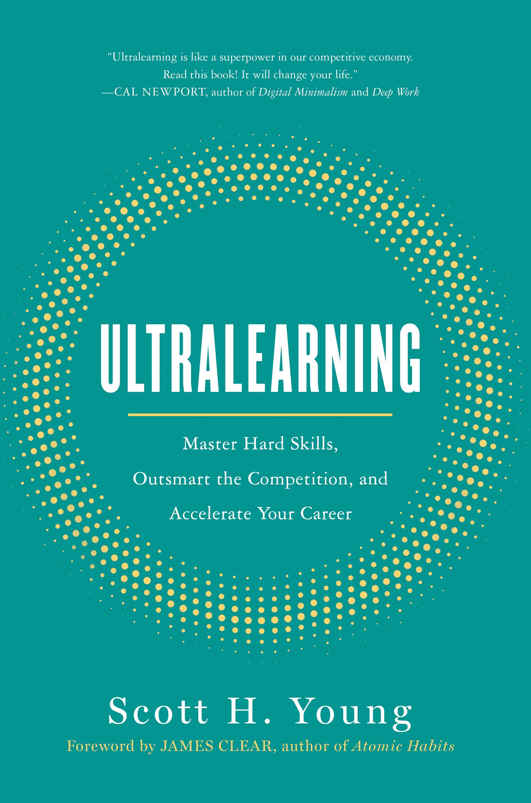
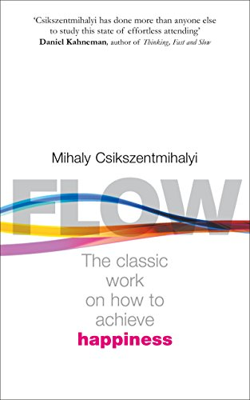

Book Review: Ultralearning by Scott Young
Ultralearning is a book which can be read by everyone. But it is not one whose core ideas can be put into practice by just anyone. From the very first chapter, we as readers understand, and are explicitly told, by the author that the type of learning he is proselytising, dubbed Ultralearning, is not going to be easy. As the book progresses, the author further elaborates how this cannot be done by everyone, and he even gives examples of aborted ultra learning experiences.
The main gist of the book is simple. It draws upon the concept of flow, as propounded by the psychologist Mihaly Csikszentmihalyi though the book itself doesn’t make any overt mention of this. I personally do not consider this any fault of the author himself, for the concept of flow, or a state of hyper-focus in which we are able to do things that are normally beyond our pale.
The author takes care to show how people who immerse themselves in this state of flow are able to achieve feats of learning.
The author divides this process of ultralearning into 9 different steps, each leading into the other and still being a self-contained technique. I will not list out the steps here, because even the names of the steps are directions enough for a person to follow. Each of the nine steps has a chapter devoted to it in which the author brings up a specific example of ultra-learning which best exemplifies the process being described in that chapter. As we move further down the 9 steps the author brings up examples from the previous chapters as well, showing how the ultra-learners there performed the process being described here. All in all, the explanation is very thorough as the author does not take any prior knowledge for granted.
The type of learning which the author talks about is one which requires solid commitment. The author is pretty clear that we need to find a way to keep ourselves committed, though he does offer examples of different people dealing with this issue in their own way both as a means to give us an idea of where to start from and how to go about it ourselves. Hyper-focus is another part of this learning, but rather ask us to deal with achieving this hyper-focus ourselves, as the author does with commitment, he gives specific advice and having tried it out myself, it helps a great deal in one’s progress in ultrelearning.
Ultimately, the main point of this book is not to act as a template for a study guide or anything of that sort. This books presents many examples of ultralearning not just in contemporary society but even going back decades and hundreds of years to show that we as human beings have that capacity within us. Thus this book is also an exploration into the capacity of human beings and the speed at which they are able to assimilate knowledge.

Do not mistake the terms “assimilating knowledge” to simply refer to conventional bookish knowledge. The topics and examples given in the book deal with all manner of ultra-learning projects, all over the globe from one person’s efforts to finish the entire MIT Mathematics syllabus for fun, to another person’s project in learning languages on the fly, and becoming fluent in them, to yet another person’s tackling of public speaking from utter novice all the way to taking part in speech competitions.
This book was a very enjoyable read for me, and one which opened my eyes to what each of us can strive to do and also how we can do it. The only gripe I had with the book was that in many parts the book feels as if it’s dragging on, reiterating the same points. The lessons which the author tries to teach are important and yet the repetition grates on one’s nerves after a while.
On a final note, I am not a fan of self-help books. I sincerely believe they are a load of nonsense. Not all self-help books are bad, and some certainly have gems of wisdom to share, but those are few and far between. This book has never explicitly stood out to me as a self-help book and I suppose that perception has blunted some of my prejudice. Even when evaluated as a self-help book, it is still a cut above the rest and that makes it stand out of the over-saturated crowd. The author genuinely tries to help the reader and that is enough to make it a good book in my opinion, especially compared to the trash that passes for self-help books these days.
In conclusion, a good book which genuinely wants the readers to succeed with the help of the techniques presented in it. The writing is good but the explanations get repetitive after a while.
7/10